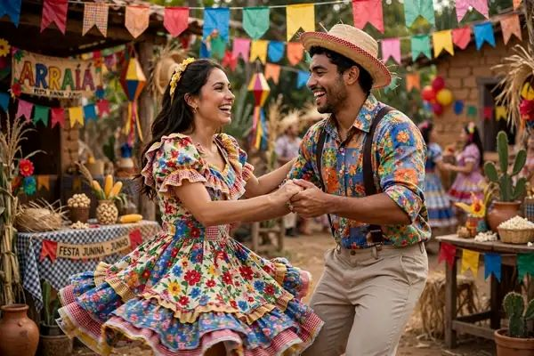
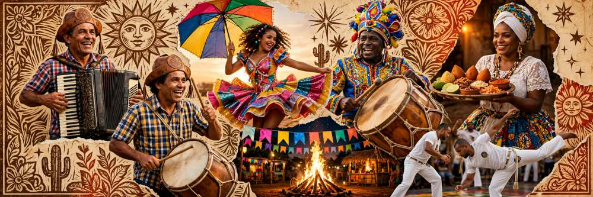
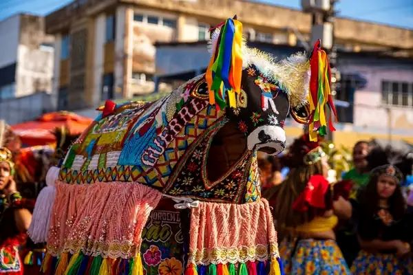
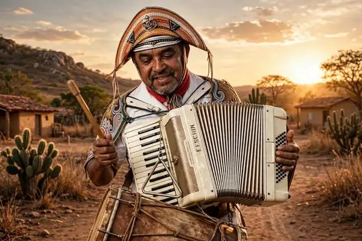
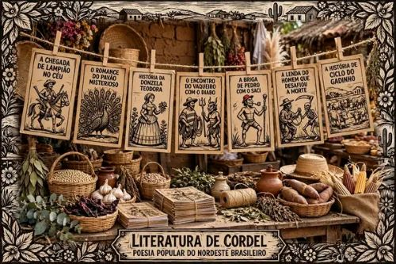
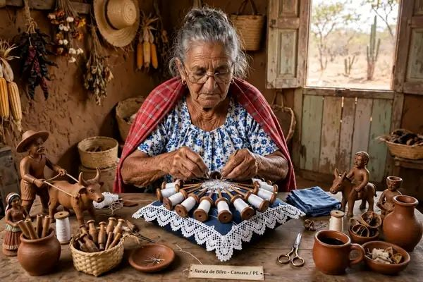
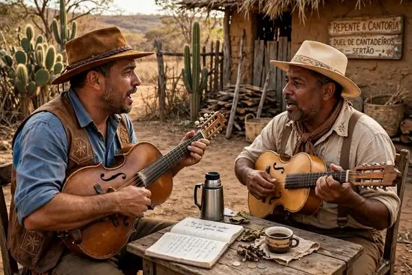

Quadrilha Junina
A dança do casamento matuto. Noiva grávida, padre atrapalhado, delegado e o marcador gritando anarriê e alavantú. Meses de ensaio e roupa de chita feita à mão.

Do casamento da quadrilha à ressurreição do Bumba Meu Boi, a cultura nordestina é teatro, fé e festa.

A dança do casamento matuto. Noiva grávida, padre atrapalhado, delegado e o marcador gritando anarriê e alavantú. Meses de ensaio e roupa de chita feita à mão.

Patrimônio Imaterial da Humanidade. O boi mais bonito da fazenda é roubado, morre e ressuscita pelas mãos do Pajé. Com Mateus, Catirina, Dono e Doutor.

Luiz Gonzaga, Dominguinhos e Elba. Sanfona, zabumba e triângulo. O ritmo que nasceu no sertão e ganhou o litoral.

Poesia em folhetos pendurados no barbante. Lampião, Padre Cícero e as pelejas do vaqueiro contadas em versos de sextilha.

Mãos que transformam. O barro de Mestre Vitalino em Caruaru e a renda de bilro das rendeiras do litoral cearense.

Dois violeiros e o desafio do improviso. Versos feitos na hora sobre o cotidiano, a política e o amor.